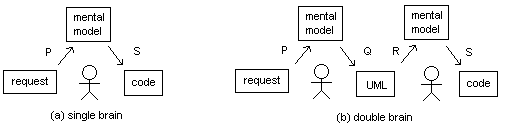

Measuring the Value of Modeling
Here’s a thought experiment (inspired in part by Michael Ernst’s groupthink exercise at MIT):
- Give half a dozen developers a two-page plain-language description of a change you want made in a program, or a new feature you want added.
- After they've finishing reading it, let them discuss it for 15 minutes.
- When they're done discussing it, send them off to their cubicles to write code. They are not allowed to communicate with one another while coding.
- Once they're done, count the inconsistencies and contradictions in their code. These indicate:
- things the developers didn't discuss during their 15 minutes;
- things they did discuss, but didn't reach consensus on; and
- things they thought they reached consensus on, but actually understood differently.
What do you think the number of comprehension-related mistakes will depend on? Off the top of my head, I’d say:
- how experienced the developers are (seasoned professionals will get to the core issues faster during those 15 minutes, and are more likely than juniors to "fill in the blanks" the same way during development);
- the size of the problem (big things take longer to iron out than little things, though that may be a tautology); and
- how much time the developers were given for discussion.
Let’s take a closer look at #3. Suppose we were to give the same problem to a second, comparable, group of developers, but let them talk for an hour. You’d expect their code would show signs of stronger consensus about what was to be built, and how.
But what about two hours? Or four? Or two days? I have no data to back this up, but I believe very strongly that (a) the developers’ performance would level off, and (b) that asymptotic value would be less than perfection. In my experience, there’s only so much you can figure out about a problem before you start writing code. After a certain amount of talking, you have to involve the software itself in the discussion in order to make any more progress.
Now let’s add another wrinkle. What if the developers aren’t normal? What if they use UML, Alloy, Z, or some other (semi-)formal modeling method? Advocates of such methods claim that by forcing developers to be specific about their meaning before any code is written, they eliminate (or at least greatly reduce) consensus errors, but I’m not convinced. I think that what they do is slow developers down so that they have longer conversations, and that those conversations are what improves consensus.
Looking at it another way, I don’t think formal notations are much use at all when the group only has 15 minutes to discuss what it’s going to do. I don’t think they’re much use when developers have an hour, either—at least, not when the team is small enough to fit into one room. Based on my interactions with physicists, mathematicians, and others who have no choice but to use exact notations, that crucial first discussion period is always going to be spent kicking ideas around using imprecise but evocative language. It’s only worth translating those ideas into more formal terms to check their completeness and consistency (a) after a working consensus has been achieved, and (b) when the problem is large enough that the people involved are likely to misremember the consensus after they leave the room.
That, I think, explains why the vast majority of developers don’t use formal notations. Again, I don’t have any data to prove this yet, but I believe that once consensus is strong enough for it to be worth translating what the group has agreed on into a formalism like UML, Alloy, or Z, it’s strong enough for the group to actually start coding (i.e, translating their consensus into a formalism that will actually run on a computer). Putting it another way, the act of translating a consensus into a formal notation does not add enough value to justify the time it requires—in most cases, it is busy work that doesn’t turn up new problems more cheaply than actually coding.
Here’s another way of looking at the same idea:

The single-brain side shows what normally happens: the developer takes part in a conversation (which may in fact mean “reads a hastily-composed email message from her boss with attachments summarizing disjointed conversations with clients who have conflicting needs”), translates that into a mental model of what is to be built, and then translates that mental model into code. The double-brain shows what happens when models are used: the first developer translates the conversation into a mental model, and that mental model into UML (or whatever). A second developer then creates her own mental model from that UML, which she then translates into code.
The claim on which modeling rests is that P+Q+R+S < P+S. This isn’t actually impossible, because:
- the two developers in the double-brain picture might be the same person (in which case, the costs of building the second mental model and translating it into code are greatly reduced compared to the single-brain picture);
- the problem might be so big and/or gnarly that no single person can hold the whole of the mental models I've drawn in their head at once (in which case, some kind of "external memory" like the UML box in the second picture is essential); or
- the "second developer" in the double-brain model might be replicated, i.e., one modeler might be doing the hard work to support N coders. In this case, R and S are replicated N times, but P and Q aren't; since they're (probably) the larger costs, the total cost is reduced.
The punchline to all of this is that I believe these experiments can actually be done. We can give specifications to small groups of developers, limit the time they have for free-wheeling discussion and/or formal modeling, have them code in isolation afterward, and see when, where, and whether modeling adds value. We can equally measure the values of P, Q, R, and S in the diagrams above. Yes, there will be lots of variation between developers, and yes, the results will be influenced by the nature of the problems we choose, but as Jorge Aranda showed in this elegant piece of empirical research, that doesn’t mean it’s impossible to prove interesting and useful things.